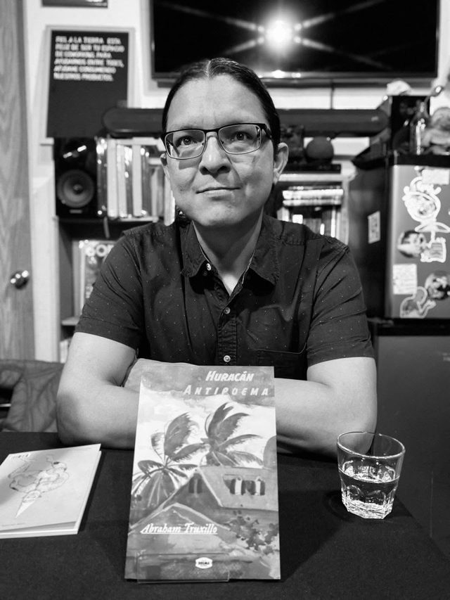

Abraham Truxillo
(Mexique, 1983). Poète, essayiste et prosateur. Licencié en lettres hispaniques de l’Université nationale autonome du Mexique (UNAM). Auteur des recueils de poésie Postales del ventrílocuo (Ediciones Sin Nombre, 2011), Huracán Antipoema (Dogma, 2025), Bolero Techno (Manofalsa, 2025) et Bestiario marino (Medusa, 2025). Il collabore à des revues et suppléments culturels mexicains, comme la Revista de la Universidad de México, Letras Libres, Tierra Adentro, Casa del Tiempo, La Jornada Semanal, Laberinto (Milenio Diario), El Cultural (La Razón), Unidiversidad (BUAP), Otros Diálogos (COLMEX), Círculo de Poesía, Cultura Colectiva, Periódico de Poesía, Punto de partida et Lee Más, entre autres. Coauteur de l’œuvre de littérature numérique Bestiario marino, qui a reçu une mention honorable au Concours national Julio Torri de littérature numérique 2021. Ses poèmes et nouvelles ont été repris dans des anthologies publiées au Mexique, en France et au Pérou, ainsi que dans l’Anthologie Lit(e)Lat de littérature numérique latino-américaine.